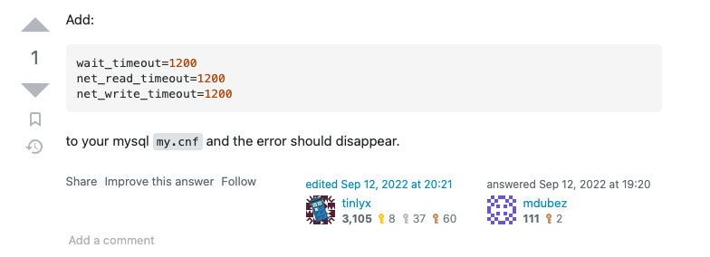

MySQL query failed
Issue
- Error
-
[warn] c.z.h.p.ProxyConnection - myapp.database - Connection com.mysql.cj.jdbc.ConnectionImpl@7d5dbfc5 marked as broken because of SQLSTATE(08S01), ErrorCode(1159) java.sql.SQLNonTransientConnectionException: Got timeout reading communication packets at com.mysql.cj.jdbc.exceptions.SQLError.createSQLException(SQLError.java:110) at com.mysql.cj.jdbc.exceptions.SQLError.createSQLException(SQLError.java:97) at com.mysql.cj.jdbc.exceptions.SQLExceptionsMapping.translateException(SQLExceptionsMapping.java:122) at com.mysql.cj.jdbc.ClientPreparedStatement.executeInternal(ClientPreparedStatement.java:955) at com.mysql.cj.jdbc.ClientPreparedStatement.execute(ClientPreparedStatement.java:372) at com.zaxxer.hikari.pool.ProxyPreparedStatement.execute(ProxyPreparedStatement.java:44) at com.zaxxer.hikari.pool.HikariProxyPreparedStatement.execute(HikariProxyPreparedStatement.java) at slick.jdbc.StatementInvoker.results(StatementInvoker.scala:39) at slick.jdbc.StatementInvoker.iteratorTo(StatementInvoker.scala:22) at slick.jdbc.Invoker.first(Invoker.scala:30) [info] s.JobServiceImpl - ec9b85de-4799-44cd-8ec4-5614b5a81e3f failed to complete
Code
The query as below
- StatDao
-
@Singleton class SlickStatDAO @Inject()(db: Database)(implicit ec: ExecutionContext) extends StatDAO with Tables { val usedb = new UseDBcommandGenerator("idr_usage").generate() /** * for HK */ ... val drop_v_engagement_HK = new DropEngagementCommandGenerator("HK").generate() val create_v_engagement_HK = new CreateEngagementCommandGenerator("HK", mysqlHKUser, mysqlHKPwd, mysqlHkIpAddress, mysqlHKPort).generate() val drop_tenant_HK = new DropTenantCommandGenerator("HK").generate() val create_tenant_HK = new CreateTenantCommandGenerator("HK", mysqlHKUser, mysqlHKPwd, mysqlHkIpAddress, mysqlHKPort).generate() val drop_tenant_engagement_HK = new DropTenantEngagementCommandGenerator("HK").generate() val create_tenant_engagement_HK = new CreateTenantEngagementCommandGenerator("HK", mysqlHKUser, mysqlHKPwd, mysqlHkIpAddress, mysqlHKPort).generate() val drop_audit_log_HK = new DropAuditLogCommandGenerator("HK").generate() val create_audit_log_HK = new CreateAuditLogCommandGenerator("HK", mysqlHKUser, mysqlHKPwd, mysqlHkIpAddress, mysqlHKPort).generate() val drop_Local_Engagement_HK = new DropLocalEngagementCommandGenerator("HK").generate() val create_Local_Engagement_HK = new CreateLocalEngagementCommandGenerator("HK").generate() val insert_into_Local_Engagement_HK = new InsertIntoLocalEngagementCommandGenerator("HK").generate() // val alter_Environment_HK = new AlterLocalEngagementCommandGenerator("HK", "Environment", "HK-AMIR").generate() val alter_Environment_HK = new AlterLocalEngagementCommandGenerator("HK", "Environment", "Hong Kong").generate() /** * for common */ ... /** * UNION */ .. override def getAll: Future[Seq[Stat]] = { val sql = IdrUsageUnion.result db.run(sql).map(_.map(statsRowToStat)) } override def getAllWOid: Future[Seq[StatWOid]] = { val sql = IdrUsageUnion.result db.run(sql).map(_.map(statsRowToStatWOid)) } def compute: Future[Seq[Stat]] = this.synchronized { val f = for { _ <- db.run(usedb) // HK _ <- db.run(drop_v_engagement_HK) _ <- db.run(create_v_engagement_HK) _ <- db.run(drop_tenant_HK) _ <- db.run(create_tenant_HK) _ <- db.run(drop_tenant_engagement_HK) _ <- db.run(create_tenant_engagement_HK) _ <- db.run(drop_audit_log_HK) _ <- db.run(create_audit_log_HK) _ <- db.run(drop_Local_Engagement_HK) _ <- db.run(create_Local_Engagement_HK) _ <- db.run(insert_into_Local_Engagement_HK) _ <- db.run(alter_Environment_HK) // COMMON ... /** * Union all Local Engagement Tables */ _ <- db.run(drop_union_all) _ <- db.run(create_union_all) x <- db.run(IdrUsageUnion.result) } yield x f.map(seq => seq.map(statsRowToStat)) } } - DropEngagementCommandGenerator
-
class DropEngagementCommandGenerator @Inject() (ServerEnvironment:String) extends CommandGeneratorByServerEnvironment { val profile: JdbcProfile = _root_.slick.jdbc.MySQLProfile import profile.api._ def generate(): SqlAction[Int, NoStream, Effect] = { sqlu""" DROP TABLE IF EXISTS `V_Engagement_#${ServerEnvironment}`; """ } } - CreateEngagementCommandGenerator
-
class CreateEngagementCommandGenerator @Inject() (ServerEnvironment:String, MySQLuser:String, MySQLpwd:String, MySQLipAdress:String, MySQLport:String) extends CommandGeneratorByServerEnvironment { val profile: JdbcProfile = _root_.slick.jdbc.MySQLProfile import profile.api._ def generate(): SqlAction[Int, NoStream, Effect] = { val databaseName = if (ServerEnvironment == "SOE") "cidrprod" else "cidr" sqlu""" CREATE TABLE `V_Engagement_#$ServerEnvironment` ( `SchemaName` VARCHAR(128) DEFAULT NULL, `EngagementId` VARCHAR(128) DEFAULT NULL, `Name` VARCHAR(512) DEFAULT NULL, `ClientId` VARCHAR(128) DEFAULT NULL, `PeriodBeginDate` DATETIME DEFAULT NULL, `PeriodEndDate` DATETIME DEFAULT NULL, `ReportSignDate` DATETIME DEFAULT NULL, `ReportReleaseDate` DATETIME DEFAULT NULL, `ArchiveDate` DATETIME DEFAULT NULL, `CreateDate` DATETIME DEFAULT NULL, `ActualArchiveDate` DATETIME DEFAULT NULL, `FreezeDate` DATETIME DEFAULT NULL, `TFOffice` VARCHAR(512) DEFAULT NULL, `TFRegion` VARCHAR(512) DEFAULT NULL, `TFStatusid` VARCHAR(128) DEFAULT NULL, `LastUpdateDate` DATETIME DEFAULT NULL, `EnableAutoSync` TINYINT(1) NOT NULL DEFAULT '1', UNIQUE KEY `V_Engagement_EngagementId_IDX` (`EngagementId`), KEY `V_Engagement_LastUpdated_IDX` (`LastUpdateDate`), KEY `V_Engagement_Name_IDX` (`Name`), KEY `V_Engagement_TFStatusid_IDX` (`TFStatusid`) ) ENGINE=FEDERATED DEFAULT CHARSET=UTF8MB4 CONNECTION='mysql://#$MySQLuser:#$MySQLpwd@#$MySQLipAdress:#$MySQLport/#$databaseName/V_Engagement'; """ } }
The query function is basically create “FEDERATED” table of remote mysql table and do the query.
More about “FEDERATED” storage in the url.
For “SQLSTATE(08S01), ErrorCode(1159)”
The url MySQL Got timeout reading communication packets when reading federated table tells some config need to be applied to mysql:

Issue finder in code
After the Mysql config is updated, there will be failure for the job, but no error info printed.
Issue finder start:
- Logback setting
-
<configuration> <conversionRule conversionWord="coloredLevel" converterClass="play.api.libs.logback.ColoredLevel"/> <appender name="FILE" class="ch.qos.logback.core.FileAppender"> <file>${application.home:-.}/logs/application.log</file> <encoder> <pattern>%date [%level] from %logger in %thread - %message%n%xException</pattern> </encoder> </appender> <appender name="STDOUT" class="ch.qos.logback.core.ConsoleAppender"> <encoder> <pattern>%coloredLevel %logger{15} - %message%n%xException{10}</pattern> </encoder> </appender> <appender name="ASYNCFILE" class="ch.qos.logback.classic.AsyncAppender"> <appender-ref ref="FILE"/> </appender> <appender name="ASYNCSTDOUT" class="ch.qos.logback.classic.AsyncAppender"> <appender-ref ref="STDOUT"/> </appender> <logger name="play" level="INFO"/> <logger name="application" level="INFO"/> <!-- Useful debugging settings in slick --> <logger name="slick.jdbc.JdbcBackend.statement" level="INFO"/> <logger name="slick.jdbc.JdbcBackend.benchmark" level="INFO"/> <logger name="com.zaxxer.hikari" level="WARN"/> <logger name="controllers" level="DEBUG"/> <logger name="service" level="DEBUG"/> <root level="WARN"> <appender-ref ref="ASYNCFILE"/> <appender-ref ref="ASYNCSTDOUT"/> </root> </configuration> - Job service impl
-
class JobServiceImpl @Inject()(statDao: StatDAO) extends JobService { var state: JobServiceState = JobServiceState(None, false, false, LocalTime.now(), Some(LocalTime.now()), Nil) implicit val ec: ExecutionContext = ExecutionContext.fromExecutor(Executors.newSingleThreadExecutor()) final val failureLimit = 5 override def getState: JobServiceState = state override def updateRunning(running: Boolean): Future[JobServiceState] = Future { state = state.copy(running = running) state } override def updateStartTime(startTime: LocalTime): Future[JobServiceState] = Future { state = state.copy(startTime = startTime) state } override def updateEndTime(endTime: Option[LocalTime]): Future[JobServiceState] = Future { state = state.copy(endTime = endTime) state } override def updateSuccessful(successful: Boolean): Future[JobServiceState] = Future { state = state.copy(successful = successful) state } override def updateId(idOpt: Option[UUID]): Future[JobServiceState] = Future { state = state.copy(id = idOpt) state } override def startAJob(uuid: UUID): Future[Seq[Stat]] = { if (state.running) { LoggerFactory.getLogger(this.getClass).warn(s"${state.id} already running.") Future.failed(new RuntimeException("is running!!!")) } else { LoggerFactory.getLogger(this.getClass).info(s"start another job $uuid") val EngagementsStats = updateRunning(true) .flatMap(_ => updateId(Some(uuid))) .flatMap(_ => updateStartTime(LocalTime.now())) .flatMap(_ => updateEndTime(None)) .flatMap(_ => statDao.compute) EngagementsStats.onComplete { case Success(value) => LoggerFactory.getLogger(this.getClass).info(s"${state.id.getOrElse("null")} successfully complete, using time ${ChronoUnit.SECONDS.between(state.startTime, LocalTime.now())}") updateRunning(false) .flatMap(_ => updateSuccessful(true)) .flatMap(_ => updateEndTime(Some(LocalTime.now()))) .foreach(_ => { state = state.copy(history = state.copy(history = Nil) :: state.history) }) case Failure(exception) => LoggerFactory.getLogger(this.getClass).info(s"${state.id.getOrElse("null")} failed to complete") updateRunning(false) .flatMap(_ => updateSuccessful(false)) .flatMap(_ => updateEndTime(Some(LocalTime.now()))) .foreach(_ => { state = state.copy(history = state.copy(history = Nil) :: state.history) }) } EngagementsStats } } override def startAJob(): Future[Seq[Stat]] = startAJob(UUID.randomUUID()) }
More advance topic
From reference 如何在Scala的for comprehension中使用Future
Let’s see what’s output of each code snip:
- s1
-
package modules.forComprehension object SerialFutureMap extends App { import scala.concurrent._ import ExecutionContext.Implicits.global val serial = for { f1 <- Future { Thread.sleep(300) println("[Serial] exec f1 first.") "f1" } f2 <- Future { println("[Serial] exec f2 second.") "f2" } } yield { f1 + " and " + f2 } serial foreach { case result => println("Serial result:" + result) } Thread.sleep(1000) } /* [Serial] exec f1 first. [Serial] exec f2 second. Serial result:f1 and f2 */ - p1
-
package modules.forComprehension object ParallelFutureMap extends App { import scala.concurrent._ import ExecutionContext.Implicits.global val f1 = Future { Thread.sleep(300) println("[Parallel] exec f1 second as it is sleep some time.") "f1" } val f2 = Future { println("[Parallel] exec f2 first.") "f2" } val parallel = for { first <- f1 second <- f2 } yield { first + " and " + second } parallel foreach { case result => println("Parallel result:" + result) } Thread.sleep(1000) } /* [Parallel] exec f2 first. [Parallel] exec f1 second as it is sleep some time. Parallel result:f1 and f2 */ - s2
-
package modules.forComprehension object SerialFutureMap2 extends App { import scala.concurrent._ import ExecutionContext.Implicits.global def f1 = Future { Thread.sleep(300) println("[Serial] exec f1 first though it sleep some time.") "f1" } def f2 = Future { println("[Serial] exec f2 second.") "f2" } val parallel = for { first <- f1 second <- f2 } yield { first + " and " + second } parallel foreach { case result => println("Serial result:" + result) } Thread.sleep(1000) } /* [Serial] exec f1 first though it sleep some time. [Serial] exec f2 second. Serial result:f1 and f2 */ - as1
-
package modules.forComprehension object AsyncSerialMap extends App { import scala.concurrent._ import ExecutionContext.Implicits.global import scala.async.Async.{async, await} def f1(name : String) = Future { Thread.sleep(300) println("[Serial] exec f1 first though it sleep some time.") name } def f2(name : String) = Future { println("[Serial] exec f2 second.") name } val serial = async { await(f1("f1")) + " and " + await(f2("f2")) } serial foreach { case result => println("serial result:" + result) } Thread.sleep(1000) } /* [Serial] exec f1 first though it sleep some time. [Serial] exec f2 second. serial result:f1 and f2 */ - ap1
-
package modules.forComprehension object AsyncParallelMap extends App { import scala.concurrent._ import ExecutionContext.Implicits.global import scala.async.Async.{async, await} def f1(name: String) = Future { Thread.sleep(300) println("[parallel] exec f1 second as it sleep some time.") name } def f2(name: String) = Future { println("[parallel] exec f2 second.") name } val parallel = async { val result1 = f1("f1") val result2 = f2("f2") await(result1) + " and " + await(result2) } parallel foreach { case result => println("parallel result:" + result) } Thread.sleep(2000) } /* [parallel] exec f2 second. [parallel] exec f1 second as it sleep some time. parallel result:f1 and f2 */ - p2
-
package modules.forComprehension object ParallelFutureMap2 extends App { import scala.concurrent._ import ExecutionContext.Implicits.global val f1 = Future { Thread.sleep(1000) println("[Parallel] exec f1 second as it is sleep some time.") "f1" } val f2 = Future { Thread.sleep(500) println("[Parallel] exec f2 first.") "f2" } val parallel = for { first <- f1 _<-Future{println("Print in for") "f3" } second <- f2 } yield { first + " and " + second } parallel foreach { case result => println("Parallel result:" + result) } Thread.sleep(1000) } /* [Parallel] exec f2 first. [Parallel] exec f1 second as it is sleep some time. Print in for Parallel result:f1 and f2 */ - p3
-
package modules.forComprehension object ParallelFutureMap3 extends App { import scala.concurrent._ import ExecutionContext.Implicits.global val f1 = Future { Thread.sleep(3000) println("[Parallel] exec f1 second as it is sleep some time.") "f1" } val f2 = Future { Thread.sleep(1000) println("[Parallel] exec f2 first.") "f2" } val f3f = Future{println("Print in for") "f3" } val parallel = for { first <- f1 f3<-f3f second <- f2 } yield { f3+" and "+ first + " and " + second } parallel foreach { case result => println("Parallel result:" + result) } Thread.sleep(4000) } /* Print in for [Parallel] exec f2 first. [Parallel] exec f1 second as it is sleep some time. Parallel result:f3 and f1 and f2 */ - p4
-
package modules.forComprehension object ParallelFutureMap4 extends App { import scala.concurrent._ import ExecutionContext.Implicits.global val f1 = Future { Thread.sleep(2000) println("[Parallel] exec f1 second as it is sleep some time.") "f1" } val f2 = Future { Thread.sleep(100) println("[Parallel] exec f2 first.") "f2" } val parallel = for { first <- f1 f3<-Future{println("Print in for") "f3" } second <- f2 } yield { f3 + " and "+first + " and " + second } parallel foreach { case result => println("Parallel result:" + result) } Thread.sleep(4000) } /* [Parallel] exec f2 first. [Parallel] exec f1 second as it is sleep some time. Print in for Parallel result:f3 and f1 and f2 */ - p5
-
package modules.forComprehension object ParallelFutureMap5 extends App { import scala.concurrent._ import ExecutionContext.Implicits.global val f1 = Future { Thread.sleep(5000) println("[Parallel] exec f1 second as it is sleep some time.") "f1" } val f2 = Future { Thread.sleep(1000) println("[Parallel] exec f2 first.") "f2" } val f3 = Future{println("Print in for") "f3" } val parallel = for { first <- f1 third<-f3 second <- f2 } yield { first + " and "+ third+" and " + second } parallel foreach { case result => println("Parallel result:" + result) } Thread.sleep(6000) } /* Print in for [Parallel] exec f2 first. [Parallel] exec f1 second as it is sleep some time. Parallel result:f1 and f3 and f2 */
0.1.0*